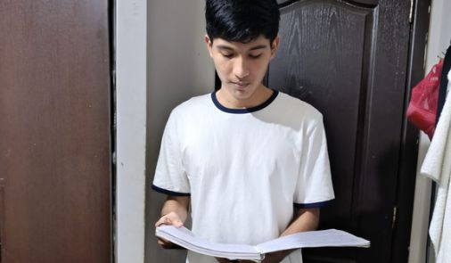
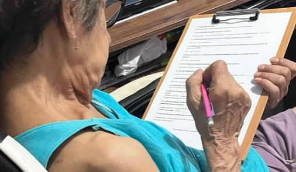
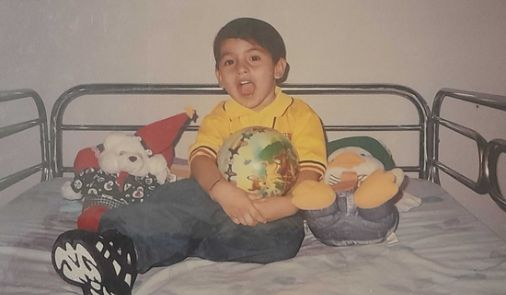
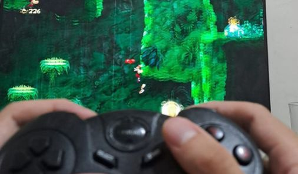
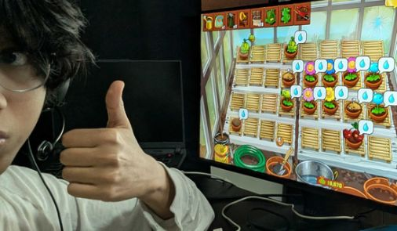
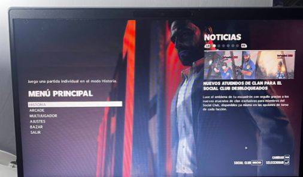
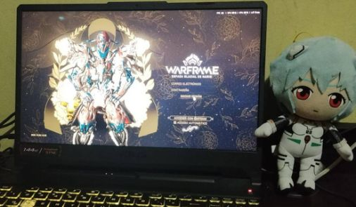
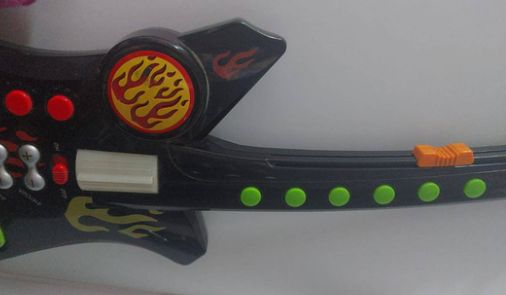

Paúl (18–29 años)
"No demonicen el jugar videojuegos siempre y cuando no sea de manera excesiva, ya que pueden beneficiar a los jugadores."
Juego favorito: Counter Strike GO / Fútbol

El estudio se concentró en la ciudad de Guayaquil, abarcando sectores tradicionales como Málaga 2 y entrevistas realizadas en modalidad virtual. Analizamos las diferencias entre el juego libre de antaño y el entretenimiento digital actual.

A través de las entrevistas identificamos tres patrones fundamentales en la comunidad de Guayaquil:

Documental de referencia sobre la evolución cultural del juego y la recreación comunitaria:
Vivencias recopiladas a través de distintas generaciones en la ciudad de Guayaquil.

"No demonicen el jugar videojuegos siempre y cuando no sea de manera excesiva, ya que pueden beneficiar a los jugadores."
Juego favorito: Counter Strike GO / Fútbol
"En cuestión de juegos físicos influye mucho la seguridad porque no es posible salir con normalidad a la calle."
Juego favorito: Call of Duty Black Ops II / Fútbol
"Los padres deberían intentar que los niños socialicen más en su niñez y adentrarse en entornos públicos."
Juego favorito: Mario Kart 7

"Nosotros no teníamos la necesidad de tener un juguete comprado; con lo que teníamos a mano nosotros mismos lo hacíamos."
Juego favorito: La rayuela
"En mi infancia era más fácil porque los padres o abuelos salían a la calle a cuidarnos. Hoy los juegos de antes se han perdido."
Juego favorito: Carreras de bicicletas

"Antes los niños salían a hacer deporte o a consolas de alquiler; ahora por la inseguridad esos espacios ya no existen."
Juego favorito: Hot Wheels / Rayman (PS1)

"Compartir cualquier tipo de juego con un grupo de personas es mucho más divertido y genera mayor satisfacción."
Juego favorito: Rayman Origins

"Existe mayor preocupación por salir a espacios públicos, por lo que muchas personas prefieren quedarse en casa."
Juego favorito: Plants vs. Zombies 2

"Fue una etapa muy feliz ya que jugábamos hasta la noche. Hoy en día se ha perdido esa libertad por el peligro."
Juego favorito: Las quemadas / Max Payne 3

"Observar actos criminales en espacios públicos causa paranoia en los padres, que prefieren que sus hijos se queden en casa."
Juego favorito: Las atrapadas / Warframe

"Lo que más disfrutaba era imaginarte un mundo de fantasía al jugar. Pero ahora en la calle hay muchos peligros."
Juego favorito: Las atrapadas / Guitarra de juguete